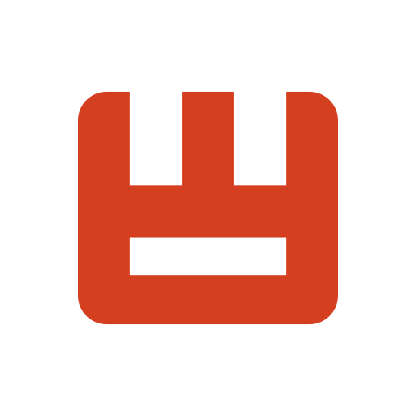

WEPIK
O'zbek tilini qo'llab quvvatlamaydi!.
WEPIK — bu intuitiv grafik dizayn platformasi bo'lib,
foydalanuvchilarga turli xil vizuallarni yaratishda
yordam beradi. U 2022-yilda Freepik jamoasi tomonidan
ishga tushirilgan va ko'plab shablonlar va dizayn
vositalariga kirishni taklif etadi. Wepikning asosiy
xususiyatlari qatoriga AI yordamida dizayn takliflari,
mobil qurilmalarda ishlash imkoniyati va jamoaviy
ishlash vositalari kiradi. Ko'proq ma'lumot olish uchun
Wepikning
rasmiy saytiga tashrif buyurishingiz mumkin.
Boshlash
